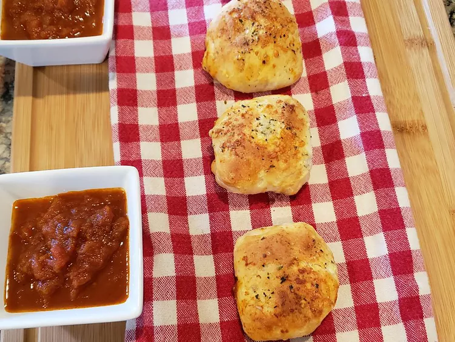

Pizza Bombs

Description
These cheesy, saucy, delicious pizza bombs will be a hit at your next backyard party.
Simple, light, flavorful balls of yum that are so quick and easy to throw together, you may want to add them to your rotation of weekly (or daily) snacks!
Served with warm marinara sauce.
Ingredients
- 1 (16 oz) can refrigerated bisquits
- 1/2 c. marinara sauce, or as needed
- 1/2 cup shredded mozzarella cheese, or as needed
- 1/2 cup pepperoni, or as needed
- 1/4 cup melted butter
- 2 1/2 tablespoons grated Parmesan cheese, or to taste
- 1 teaspoon Italian seasoning
Directions
- Preheat the oven to 375 degrees F (190 degrees C). Line a baking sheet with parchment paper.
- Pop open the biscuit can and divide into 8 biscuits.
Flatten each biscuit with your thumb into a 1/8-inch thick circle.
- Spread the center of each circle with about 1 tablespoon marinara sauce,
leaving a 1/4-inch edge open. Sprinkle each circle with about 1 tablespoon mozzarella cheese,
and about 1 tablespoon pepperoni.
- Pull up the edges of each circle to form a ball, and seal completely.
Roll them in your hands to ensure the dough is sealed, then set each ball on the baking sheet seal-side-down.
- Brush each ball with melted butter. Sprinkle with Parmesan cheese and Italian seasoning.
- Bake in the preheated oven until golden brown, about 15 minutes.
Serve with additional warmed marinara sauce for dipping.